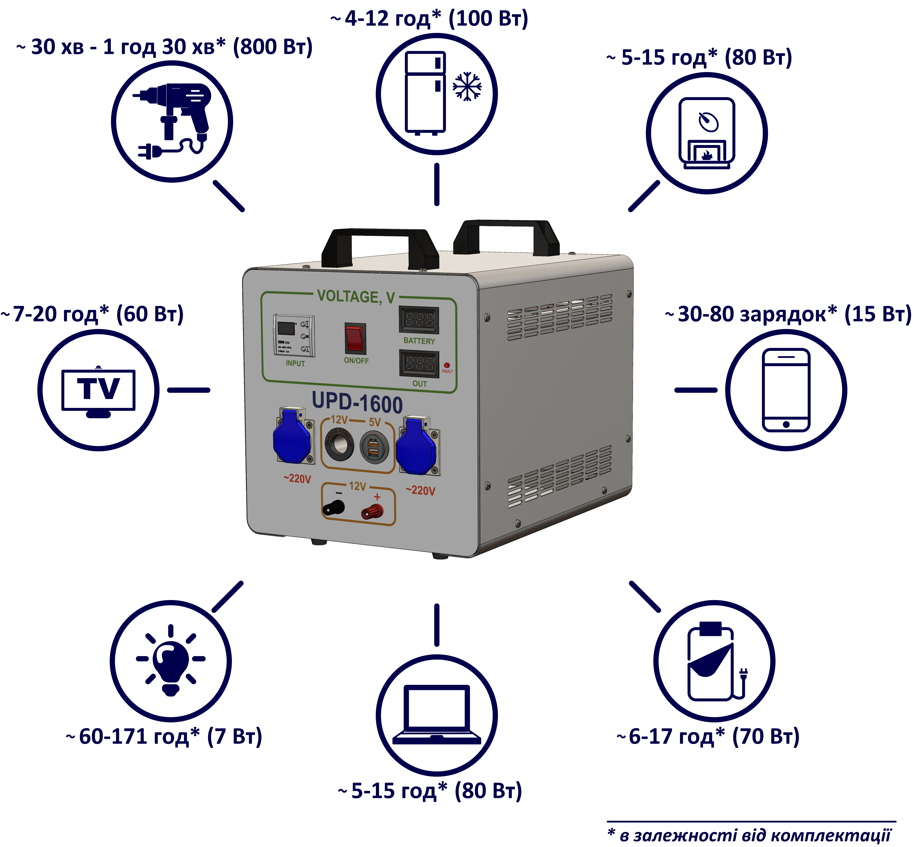

UPD-1600: Ваше Надежное Решение для Бесперебойного Электропитания

UPD-1600 - это современное устройство бесперебойного питания (UPS), разработанное для обеспечения надежного электропитания вашей техники. Независимо от вашего местоположения - дома, в офисе или на открытом воздухе, UPD-1600 становится вашим верным спутником, обеспечивая непрерывное питание даже при сбоях в электроснабжении.
Характеристики UPD-1600:
| Параметр | UPD-1600 | UPD-1600 AGM |
|---|---|---|
| Емкость, А•час | 100 | 50 |
| Мощность, Вт (длительная нагрузка) | До 1000 | До 400 |
| Мощность, Вт (пиковая нагрузка) | 2800 | 1400 |
| Габаритные размеры, мм | 305 x 360 x 445 | 305 x 360 x 445 |
| Масса, кг | Не более 24,5 | Не более 24,5 |
| Выходные порты | 220 В, 50 Гц - 2 шт. 5 В (USB) - 1 А: 1 шт.; 2,1 А: 1 шт. 12 В прикуриватель 12 В клеммы |
220 В, 50 Гц - 2 шт. 5 В (USB) - 1 А: 1 шт.; 2,1 А: 1 шт. 12 В прикуриватель 12 В клеммы |
| Информация о аккумуляторе | Химический состав: LiFePO4 Циклический ресурс: не менее 500/4000 |
Химический состав: AGM (Absorbent Glass Mat) Циклический ресурс: не менее 500/4000 |

Преимущества UPD-1600:
- Высокая Емкость: UPD-1600 предоставляет впечатляющую емкость на уровне 100 А•часов. Это означает, что вы можете поддерживать работоспособность ваших устройств на продолжительное время даже при длительных отключениях электроснабжения. Эта высокая емкость придает вам уверенность, что важные операции и данные останутся в безопасности.
- Мощность для Любых Задач: UPD-1600 обеспечивает мощность до 1000 Вт для длительной нагрузки и даже до 2800 Вт для пиковых нагрузок. Это позволяет вам не только подключать небольшие устройства, такие как компьютеры и мониторы, но и обеспечивать электропитание крупных систем и оборудования, что делает его идеальным решением как для офисов, так и для домашнего использования.
- Компактные Размеры: Несмотря на высокую емкость и мощность, UPD-1600 остается компактным устройством, занимая минимум места с габаритами 305 x 360 x 445 мм. Это позволяет вам размещать его в ограниченных пространствах, что особенно важно для офисных и домашних условий.
- Легкий и Переносимый: С весом не более 24,5 кг UPD-1600 легко переносить и использовать в различных ситуациях. Вы можете взять его с собой на открытый воздух, в поездки или использовать во временных местах работы без неудобств.
- Многофункциональные Выходные Порты: UPD-1600 оборудован разнообразными выходными портами, включая стандартные 220 Вольт, 50 Герц для электроники, USB порты с разной токовой нагрузкой для зарядки мобильных устройств, прикуриватель на 12 Вольт и клеммы для подключения различной техники. Эта многофункциональность позволяет вам использовать его для широкого спектра устройств.
- Надежный Аккумулятор LiFePO4: Химический состав LiFePO4 обеспечивает надежность и безопасность. Этот аккумулятор имеет циклический ресурс не менее 500 раз, что означает долгий срок службы. Вы можете полагаться на него в критических ситуациях.
- Гарантия Надежности: Производитель гарантирует работоспособность устройства UPD-1600 в течение 12 месяцев, при соблюдении требований эксплуатационной документации. Это подтверждение надежности и качества продукта.
С UPD-1600 вы можете быть уверены, что ваши электронные устройства будут работать надежно даже в условиях непредвиденных сбоев электроснабжения. Это надежное и эффективное решение для обеспечения бесперебойного электропитания, что гарантирует вам безопасность и спокойствие.